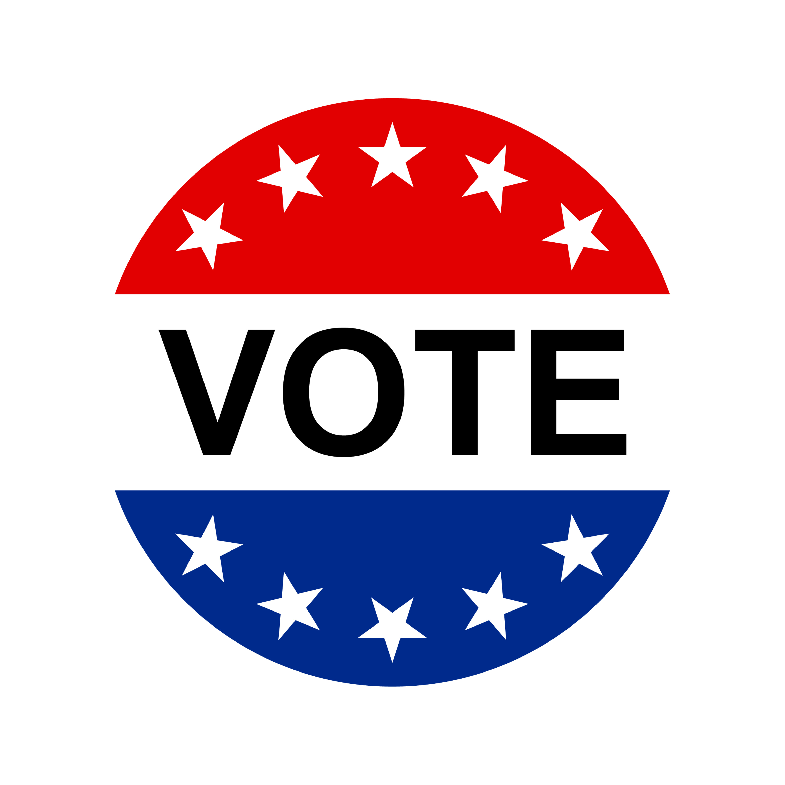

Community Voting
As a VMF Coin holder, you have the power to shape our community's future through voting. Our voting system ensures that every voice matters and that decisions are made transparently and fairly.
Participate in important decisions about charity selection, platform development, and community initiatives.
VOTE HERE

Charity Selection
Charity Selection
Vote on which veteran charities receive funding from our community pool.
Platform Development
Platform Development
Help decide on new features and improvements to the VMF Coin platform.
Community Initiatives
Community Initiatives
Shape community events and support programs through your vote.

National Holiday Community Voting Giveaway Schedule
- National Medal of Honor Day (March 25th)
- Memorial Day (Last Monday in May)
- Flag Day (June 14th)
- Independence Day (July 4th)
- Purple Heart Day (August 7th)
- Patriot Day (September 11th)
- Veterans Day (November 11th)
Vote or Learn How